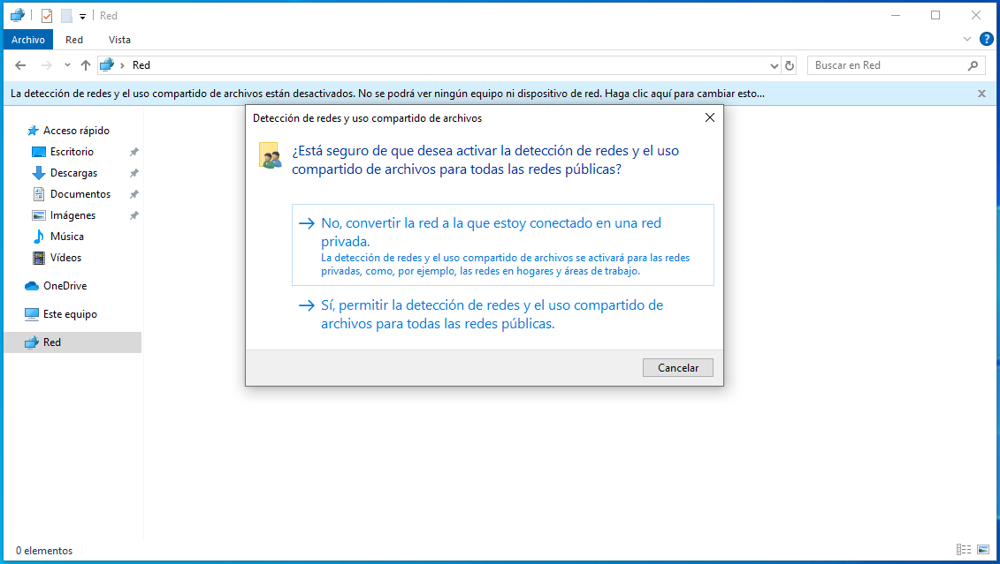
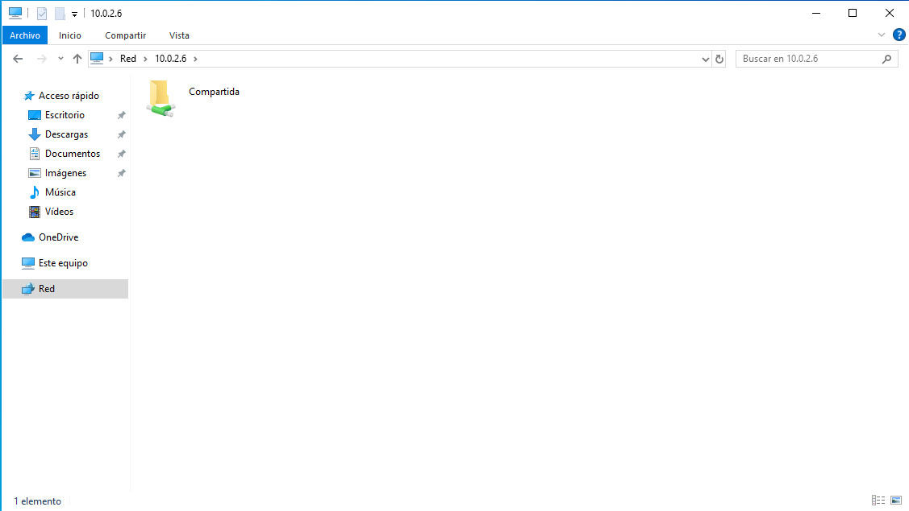
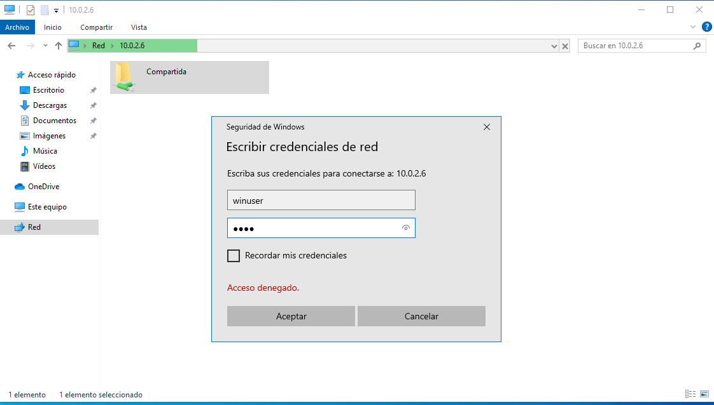
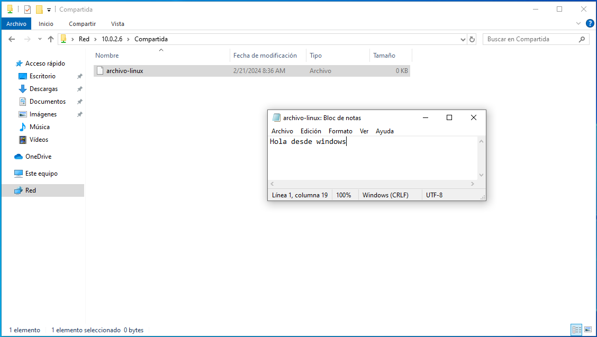
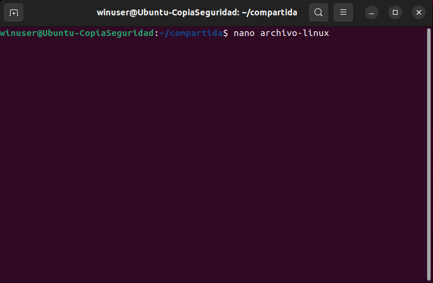
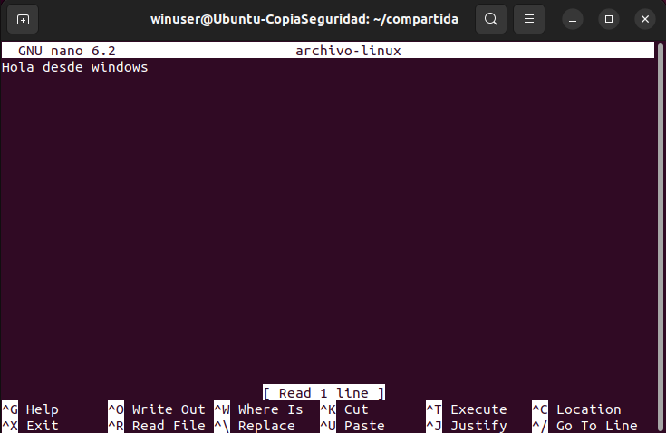

En la maquina Windows necesitamos habilitar el uso compartido de archivos y carpetas
Abrimos ejecutar en Windows y escribimos la dirección ip de la máquina ubuntu. En nuestro caso \\10.0.2.6 y nos aparecera la carpeta compartida.
Clicamos en ella y nos pedira las credenciales para poder acceder a ella.
Para comprobar que tenemos todos los permisos creamos un archivo .txt donde escribiremos un mensaje.
Ahora desde la máquina de Ubuntu nos posicionamos en la ruta y con el editor nano abrimos el archivo.
Efectivamente nos aparece el contenido que hemos escrito anteriormente desde Windows. Por lo tanto el servicio funciona correctamente.
